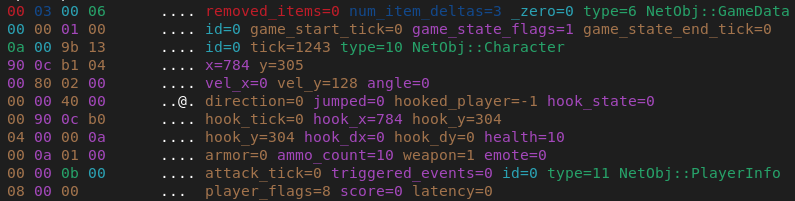
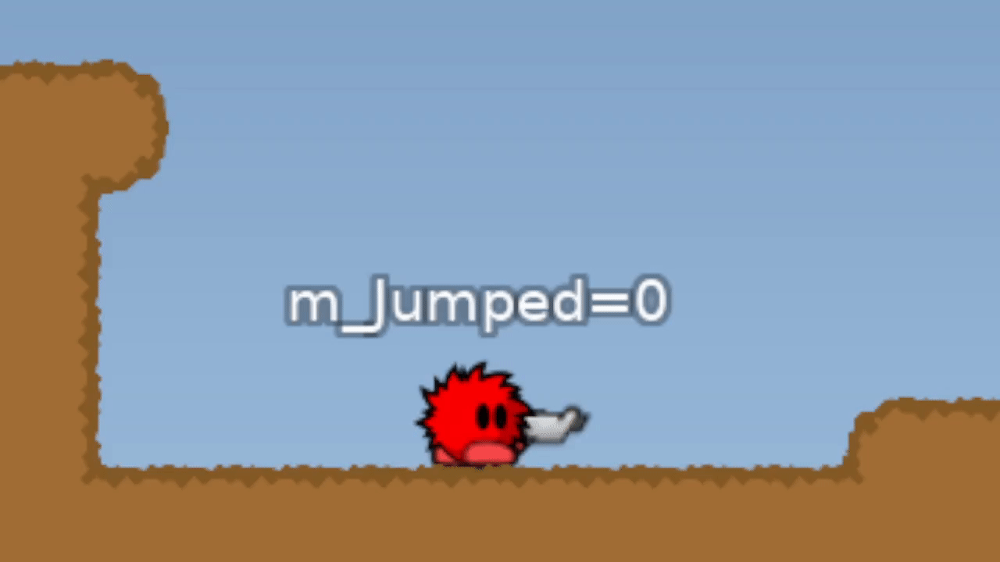

List of snap items
Note there is also documentation about snapshots in libtw2.
The network messages
NETMSG_SNAP,
NETMSG_SNAPEMPTY and
NETMSG_SNAPSINGLE
contain snapshots which represent the current game state.
The snapshot data
contains snap items which represent things like
tees, projectiles and similar.
All of those items are encoded as
packed integers.
The snapshot is built by the server and sent to the client.
Snap item
When it comes to byte layout that is sent over the network. There are two types of snap items:-
Known size snap items:
There is a list of snap item sizes that is fixed. That list is included in the client and server code. since both parties already know the size it won't be included in the snap. This is the majority of all traffic.+---------+----+-----------+ | type_id | id | payload.. | +---------+----+-----------+ -
Unknown size snap items:
The items of which the client does not know the size yet. Will contain a size field in the snapshot data. Which is filled by the server.+---------+----+------+-----------+ | type_id | id | size | payload.. | +---------+----+------+-----------+
Snap item key
The term snap item key. Refers to a unique identifier of a snap item. It is a mix of the type id and id. Neither type ids nor ids are unique in a snapshot. But their combination SHOULD be unique. Even if the client can still properly render things correctly when type id and id combinations are reused it is technically wrong and also breaks the concept of snap item keys.The item key can be generated based on type id and id like this:
(item.type_id << 16) | (item.id & 0xffff)
The reference implementation actually does not calculate item keys.
But only ever stores the item key. And extracts type id and id from it if it is needed.
The item key is a 32 bit integer with the type id as the lower 16 bits and the id as the higher 16 bits.
+------------------+------------------+
| type_id (16 bit) | id (16 bit) |
+------------------+------------------+
Size list edge case
There are two snap items ( obj_player_info_race and obj_game_data_race ) that were added after the 0.7 release and their size is technically fixed and they should be included in the known size list. But since there was already a official client release without those items, they are intentionally removed from the list to stay backwards compatible. The client skips all items with a unknown type_id so the server can send snap items unknown to the client as long as the size is included so the client knows how many bytes to ignore.Snapshot data format
Every type_id has its own ids. So there can be a projectile with id 0 and a character with id 0. Here a fully annotated real sample snapshot with the raw bytes (huffman decompressed but not int unpacked) on the left and annotations on the right. It was generated using the teeworlds_network ruby library
All snapshot items are deltas
The entire snapshot payload should always be seen as a delta to a previous snapshot. The payload (data) of a snapshot starts with a short header:
- NumDeletedItems
- NumUpdatedItems
- Unused
m_X set to -4 it does not mean
that in the actual world there is a tee located at coordinate -4 it just means that this character
moved 4 units to the left compared to its previous known location. Same if m_Health is set to 0
it does not mean that the character is dead. It just means that the health did not change.
This allows the int packer to do its magic which performs well on small numbers. Let's say we have a big map and a tee moving around on the x coordinate 16777215 (maps that big are actually not possible this is just for the example sake) which is a 3 byte integer but the tee only moved 10 units since the last synced snapshot so the new snapshot only needs one byte to represent the coordinate of this tee. It also means every unchanged value will be one null byte which then helps the huffman compression that is applied on top. Because it works best if it is given consecutive repeating bytes.
The delta is created by the server against the last snapshot that the client acknowledged. The snap message also contains the game tick of the snapshot that was used as a base for the delta. So the client is supposed to keep a few snapshots with their game ticks locally. To then find the correct one to unpack new deltas against.
Also the first snapshot can be unpacked like a delta. And the delta can be applied to an empty snapshot. In that case game tick - delta_tick should evaluate to
-1
Delta item example
Here an example value of one character snap item sent in the first snapshot. All values can be interpreted as is or as a diff against null values.
// NETMSG_SNAPSINGLE game_tick=8170 delta_tick=-1
struct CNetObj_Character Item = {
.m_Tick = 8168,
.m_X = 3199920; // 99997 tiles (divided by 32)
.m_Y = 1105; // 34 tiles (divided by 32)
.m_VelX = 0,
.m_VelY = 128,
.m_Angle = 0,
.m_Direction = 0,
.m_Jumped = 0,
.m_HookedPlayer = -1,
.m_HookState = 0,
.m_HookTick = 0,
.m_HookX = 3199920,
.m_HookY = 1104,
.m_HookDx = 0,
.m_HookDy = 0,
.m_Health = 10,
.m_Armor = 0,
.m_AmmoCount = 10,
.m_Weapon = 1; // WEAPON_GUN
.m_Emote = 0; // EMOTE_NORMAL
.m_AttackTick = 0,
.m_TriggeredEvents = 0,
};

Then this would be the first delta snapshot. Which has to be red as a diff to the snapshot with the game_tick matching this snapshots delta_tick (which is the one above).
// NETMSG_SNAPSINGLE game_tick=8218 delta_tick=8216
struct CNetObj_Character Item = {
.m_Tick = 50,
.m_X = -2; // 0 tiles (divided by 32)
.m_Y = 0; // 0 tiles (divided by 32)
.m_VelX = -512,
.m_VelY = 0,
.m_Angle = 0,
.m_Direction = -1,
.m_Jumped = 0,
.m_HookedPlayer = 0,
.m_HookState = 0,
.m_HookTick = 0,
.m_HookX = 0,
.m_HookY = 1,
.m_HookDx = 0,
.m_HookDy = 0,
.m_Health = 0,
.m_Armor = 0,
.m_AmmoCount = 0,
.m_Weapon = 0; // WEAPON_HAMMER
.m_Emote = 0; // EMOTE_NORMAL
.m_AttackTick = 0,
.m_TriggeredEvents = 0,
};
The second snap item contains for example m_X = -2 which would be on the very left of this huge map.
But the actual position of the tee is now the old m_X plus -2 which would be 3199918.
Also the m_Weapon is set to 0 which would indicate WEAPON_HAMMER but it has to be red as a
diff to the old weapon which was 1 (WEAPON_GUN) so 1 + 0 is still 1
meaning this tee actually still holds a gun.

Known size table
| type_id | size | name | parameters | description |
|---|---|---|---|---|
| 1 | 10 | obj_player_input |
int m_Direction; int m_TargetX; int m_TargetY; int m_Jump; int m_Fire; int m_Hook; int m_PlayerFlags; int m_WantedWeapon; int m_NextWeapon; int m_PrevWeapon; |
This is a special snap item that is not actually included in the snap.
But instead sent by the client in the system message
NETMSG_INPUT
The m_PlayerFlags field has the following flags:
|
| 2 | 6 | obj_projectile |
int m_X; int m_Y; int m_VelX; int m_VelY; int m_Type; int m_StartTick; |
desc |
| 3 | 5 | obj_laser |
int m_X; int m_Y; int m_FromX; int m_FromY; int m_StartTick; |
desc |
| 4 | 3 | obj_pickup |
int m_X; int m_Y; int m_Type; |
m_Type can be on of those:
|
| 5 | 3 | obj_flag |
int m_X; int m_Y; int m_Team; |
desc |
| 6 | 3 | obj_game_data |
int m_GameStartTick; int m_GameStateFlags; int m_GameStateEndTick; |
Possible m_GameStateFlags are:
|
| 7 | 2 | obj_game_data_team |
int m_TeamscoreRed; int m_TeamscoreBlue; |
desc |
| 8 | 4 | obj_game_data_flag |
int m_FlagCarrierRed; int m_FlagCarrierBlue; int m_FlagDropTickRed; int m_FlagDropTickBlue; |
The fields m_FlagCarrierRed and m_FlagCarrierBlue
hold either the client id of the person carrying the flag or a negative value.
The negative values have the following meanings:
|
| 9 | 15 | obj_character_core |
int m_Tick; int m_X; int m_Y; int m_VelX; int m_VelY; int m_Angle; int m_Direction; int m_Jumped; int m_HookedPlayer; int m_HookState; int m_HookTick; int m_HookX; int m_HookY; int m_HookDx; int m_HookDy; |
This item is not being sent in the snap directly.
It is only ever sent as part of obj_character.
So the snap item type id 9 is unused.
m_Jumped is more complex than on and off. There is 0 for off yes. But on is represented on the bit level. Here a snippet from the source code.
 m_HookState has those possible values:
<Zwelf>
m_HookTick has the type NetTick
in protocol.py,
but is used as HookDuration. Starting with zero and incrementing one each tick until the roughly 60 ticks = 1.2s are passed.
|
| 10 | 22 | obj_character |
/* core */ int m_Tick; int m_X; int m_Y; int m_VelX; int m_VelY; int m_Angle; int m_Direction; int m_Jumped; int m_HookedPlayer; int m_HookState; int m_HookTick; int m_HookX; int m_HookY; int m_HookDx; int m_HookDy; /* character extension */ int m_Health; int m_Armor; int m_AmmoCount; int m_Weapon; int m_Emote; int m_AttackTick; int m_TriggeredEvents; |
m_TriggeredEvents can have any of those flags set
|
| 11 | 3 | obj_player_info |
int m_PlayerFlags; int m_Score; int m_Latency; |
Unpacked by the client in gameclient.cpp
CGameClient::OnNewSnapshot()
|
| 12 | 4 | obj_spectator_info |
int m_SpecMode; int m_SpectatorID; int m_X; int m_Y; |
m_SpecMode has one of those values:
|
| 13 | 58 | obj_de_client_info |
int m_Local; int m_Team; int m_aName[4]; int m_aClan[3]; int m_Country; int m_aaSkinPartNames[6][6]; int m_aUseCustomColors[6]; int m_aSkinPartColors[6]; |
Only used for demos |
| 14 | 5 | obj_de_game_info |
int m_GameFlags; int m_ScoreLimit; int m_TimeLimit; int m_MatchNum; int m_MatchCurrent; |
Only used for demos |
| 15 | 32 | obj_de_tune_params | int m_aTuneParams[32]; | Only used for demos |
| 16 | 2 | event_common |
int m_X; int m_Y; |
This item is not being sent in the snap directly. It is only ever sent as part of other events. So the snap item type id 16 is unused. |
| 17 | 2 | event_explosion |
int m_X; int m_Y; |
desc |
| 18 | 2 | event_spawn |
int m_X; int m_Y; |
desc |
| 19 | 2 | event_hammerhit |
int m_X; int m_Y; |
desc |
| 20 | 3 | event_death |
/* common */ int m_X; int m_Y; /* death */ int m_ClientID; |
desc |
| 21 | 3 | event_sound_world |
/* common */ int m_X; int m_Y; /* sound_world */ int m_SoundID; |
desc |
| 22 | 5 | event_damage |
/* common */ int m_X; int m_Y; /* damage */ int m_ClientID; int m_Angle; int m_HealthAmount; int m_ArmorAmount; int m_Self; |
desc |
Unknown size table (0.7.x extension)
| type_id | size | name | parameters | description |
|---|---|---|---|---|
| 23 | 1 | obj_player_info_race | int m_RaceStartTick; | desc |
| 24 | 3 | obj_game_data_race |
int m_BestTime; int m_Precision; int m_RaceFlags; |
An example server side implementation can be seen in the unique clans'
unique-race
modification.
|